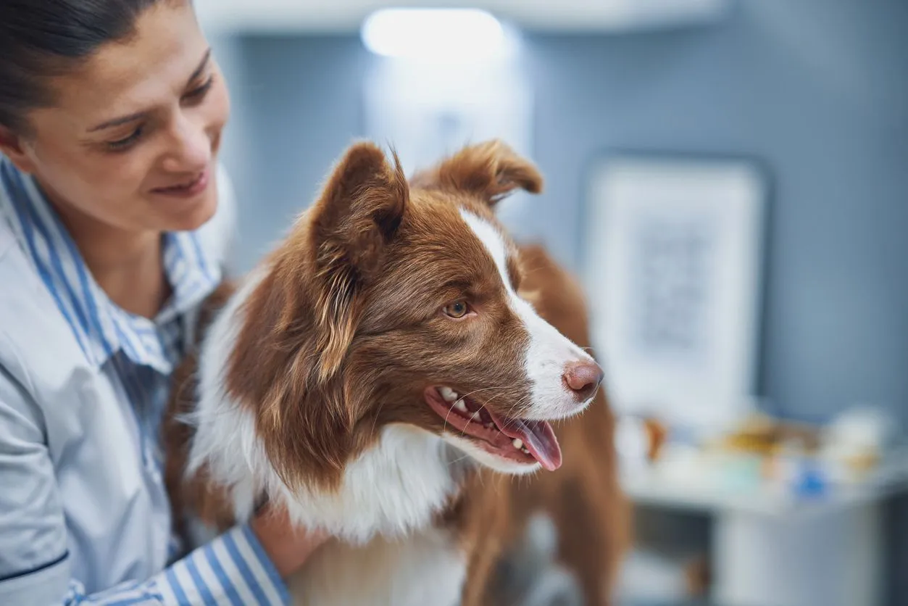
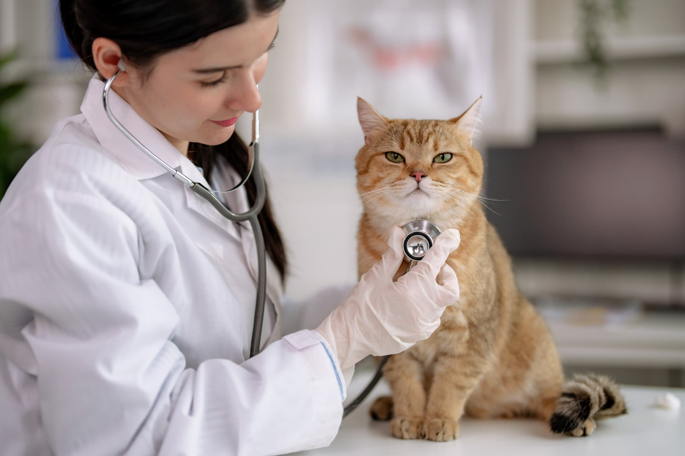

¿Por qué elegirnos?
Contamos con un equipo experto y modernas instalaciones para ofrecerle a tu mascota el cuidado integral que merece, desde consultas de rutina hasta emergencias, siempre con un enfoque centrado en su bienestar y salud.

Consejos de atención
Ofrecemos consejos personalizados para el cuidado de tu mascota, desde alimentación hasta ejercicio, para asegurar su bienestar y felicidad.

Ayuda veterinaria
Ofrecemos servicios veterinarios de calidad para diagnosticar y tratar condiciones médicas en tu mascota, con un enfoque en la prevención y el bienestar.
Servicios de emergencia
Ofrecemos servicios de emergencia veterinaria las 24 horas para atender situaciones críticas y garantizar la salud y seguridad de tu mascota en momentos de urgencia.
Nuestro equipo
Nuestras instalaciones
Equipamiento médico
- Ecógrafo digital de última generación
- Equipo de radiografía digital
- Analizador de sangre automático
- Equipo de laboratorio clínico
Quirófano
- Sala de cirugía estéril
- Equipo de anestesia avanzado
- Monitoreo multiparamétrico
- Instrumental quirúrgico especializado
Servicios
- Hospitalización 24/7
- Farmacia especializada
- Servicio de urgencias
- Área de rehabilitación
Nuestros profesionales
Dr. Juan Pérez
Especialista en medicina canina con más de 10 años de experiencia.
Experiencia profesional:
- Licenciado en Medicina Veterinaria - Universidad Nacional
- Postgrado en Medicina Interna Canina - Certificación Internacional
- Más de 10 años atendiendo perros en clínica
- Especializado en diagnóstico y tratamiento de enfermedades crónicas
- Instructor en seminarios de medicina canina
Disponible: Lunes a Viernes
Dra. María López
Experta en felinos y cirugía veterinaria.
Experiencia profesional:
- Licenciada en Medicina Veterinaria - Universidad Nacional
- Postgrado en Cirugía Veterinaria - Centro de Especialización Quirúrgica
- Especialista certificada en medicina felina
- Más de 8 años realizando procedimientos quirúrgicos
- Miembro de asociaciones veterinarias internacionales
Disponible: Lunes a Sábado
Dr. Carlos Rojas
Especialista en emergencias y cuidados intensivos.
Experiencia profesional:
- Licenciado en Medicina Veterinaria - Universidad Nacional
- Certificación en Medicina de Emergencia y Cuidados Críticos
- Más de 12 años en servicio de emergencias veterinarias
- Capacitado en resucitación cardiopulmonar animal
- Especialista en trauma y atención de urgencias
Disponible: 24/7 para emergencias